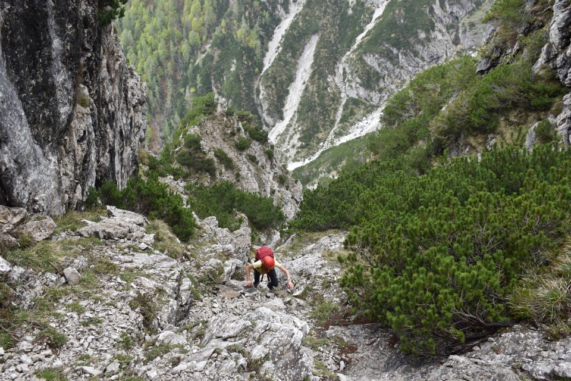
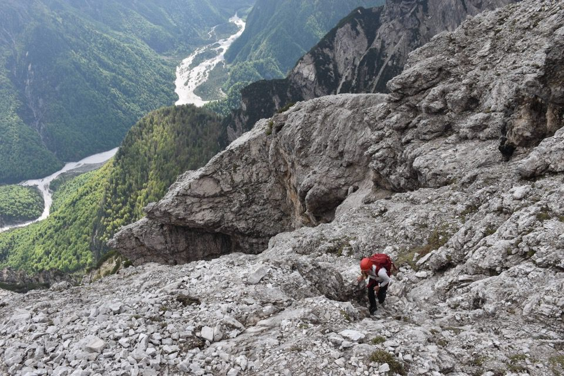
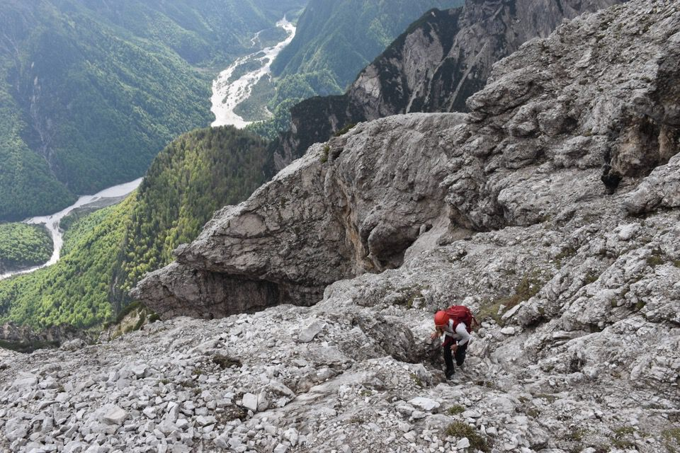
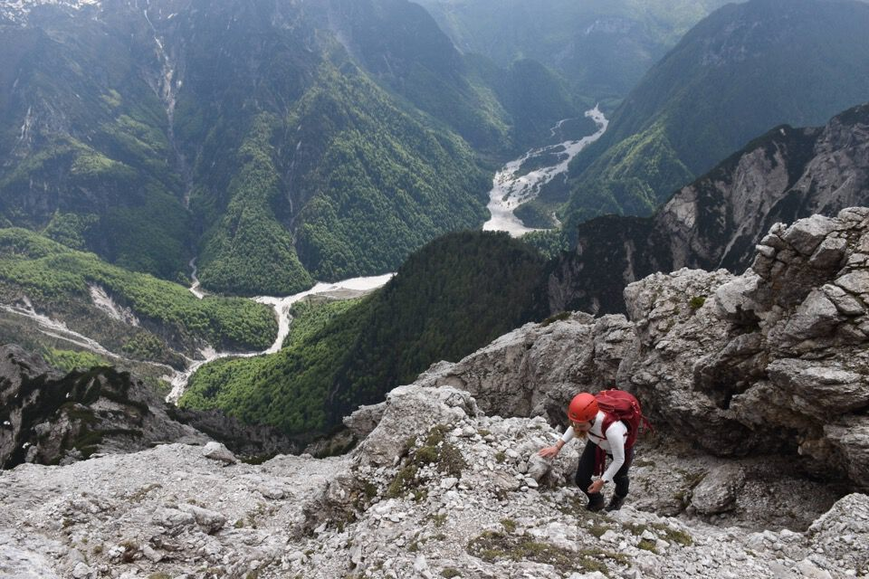

Fantastico itinerario di camosci sul versante Sud di questa imponente montagna: salendo a zig-zag sfruttando i punti deboli del monte si arriva in cima con insperabile facilità. Tieni conto che la «via normale» per cresta Nord è un itinerario alpinistico di II+ esposto!
Altissima si erge la cresta Podestine - Meda, col versante che ci apprestiamo a salire.
La cima a mo' di spallone sulla dx è denominata Cima della Prendera (???) sulla CTRN5000 e l'itinerario in versante Sud ci passa accanto.
Nel ciol de la Frata.
L'intrigante versante di salita.
La Frata de Barbìn.
Inizia l'avventura.
Ecco la quota di cui parlavo prima.

La via è una continua ricerca dei punti più facili.

Passaggi insperati.
Oh finalmente rocce, basta mughi!
Arriviamo su uno spallone, convinti che qui inizi un rampa che scenda nel ciol de Soraùs; rimango un po' perplesso, vediamo solo una stretta cengia: la seguo e capisco che effettivamente si arriva alla rampa, a cui conviene però accedere dallo spallone «successivo».
Bei panorami: fortuna che le nuvole si stanno alzando.
Ma che bella cima Pussa da Sud! Con questa luce poi...
E ora via su verso la cima.
 

Zona bellissima di rocce articolate.
Finalmente vediamo la cresta!
Ebbene ce l'abbiamo fatta.
Poche foto in vetta... andiamo giù. Ma che bello è vedere dall'alto le Grave di Gere?
Versante Ovest delle Caserine, con ben tre rampe/cenge che portano in cresta.

Eccoci alla selletta dove inizia la via di discesa per il ciol de Soraùs.
Ammirando le Caserine.

Sotto il possente spigolo Sud della Meda, fantastico.
Verso cima Pussa e cima di San Francesco, col piccolo catino alla loro base.
Seguiamo il cengione in direzione del ciol de Soraùs.
I magnifici strapiombi gialli della parete Est.
E ora giù verso il ciol de Soraùs.

La parte finale della rampa da cui siamo scesi.
Forca Pregoiane: verrebbe quasi voglia di farci un salto...
E ora giù per il CAI 376, ovvero per il ciol de Soraùs: interminabile!
Cima della Meda.